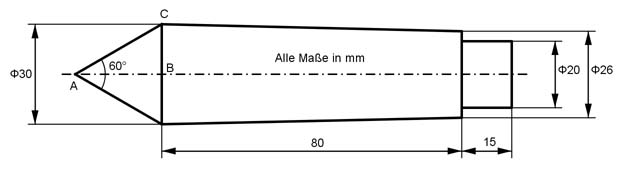

Aufgabe 279 Welches Volumen V hat die dargestellte Aufnahmespitze?  V = Kegel K + Kegelstumpf KS + Zylinder: Im Dreieck ABC gilt: ∠CAB = 60°/2 = 30° BC = 30 mm/2 = 15 mm BC tan 30° = ----- |*AB AB AB * tan 30° = BC |:tan 30° BC 15 mm AB = --------- = --------- = 26 mm tan 30° 0,5774 л * BC² * AB л * 15² mm² * 26 mm K = -------------- = ----------------------- = 6 123 mm³ 3 3 r2 = 26 mm/2 = 13 mm л * h KS = -------- * (r1² + r1 * r2 + r2²) 3 л * 80 KS = -------- * (15² + 15 * 13 + 13²) cm³ 3 л * 80 KS = -------- * (225 + 15 * 13 + 169) cm³ 3 KS = 49 319 mm³ Z = л * r² * h r = 20 mm/2 = 10 mm Z = л * 10² mm² * 15 mm = 4 710 mm³ V = K + KS + Z = 6 123 mm³ + 49 319 mm³ + 4 710 mm³ V = 60 152 mm³ = 60,15 cm³